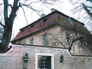
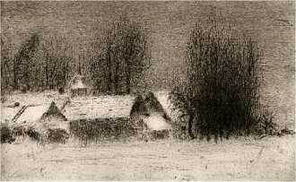
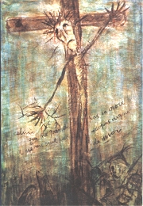
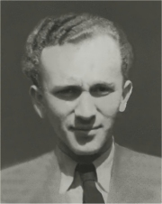
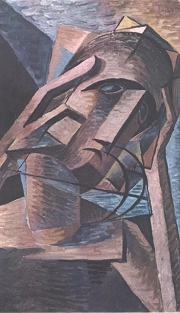

Zrzavı: Utrpení
Které avantgardní básníky znáš?
Které básníky ze Skupiny 42 znáš?
Co víš o V.Èerném?
Kteøí slavní spisovatelé pøispìli do Jarního almanachu básnického 1940?
|
BÁSNÍCI
Vedle starších básníkù z pøedváleènıch generací ruchovcù, lumírovcù, moderny a buøièù zaèala ve 20. století publikovat nová generace avantgardních spisovatelù. Zároveò se prosazuje jinı vıznamnı proud v èeské literatuøe, pro kterı byl typickı odvrat od optimistického poetismu a pøíklon k vánìjším tématùm. Tito básníci se vìnují meditativní nebo duchovní lyrice a v jejich dílech zaznívají tragické motivy smrti. Poetistickı náhled na svìt brzy opustil František Halas i Vladimír Holan. Køesanské hodnoty vyznával Bohuslav Reynek nebo Jan Zahradníèek.
Tìkou situaci zaívala literatura v dobì protektorátu, kdy se autoøi museli kvùli cenzuøe uchılit k jinotajùm. V této dobì debutuje øada mladıch spisovatelù v publikaci Jarní almanach básnickı 1940. Nejvıraznìjším básníkem nové generace byl Jiøí Orten. Básník Kamil Bednáø píše programovı èlánek Slovo k mladım, ve kterém formuluje program „nahého èlovìka" vyvázaného ze spoleèenskıch vztahù, vyjadøuje skepsi k ideologiím a vyzıvá k návratu k vìènım hodnotám. Po válce zaloil skupinu Ohnice (pojmenovanou na poèest mrtvého Ortena podle jedné z jeho básnickıch sbírek). Ve stejné dobì vznikla Skupina 42. Kritik Václav Èernı charakterizoval tvorbu této generace jako existenciální.
Z vıtvarníkù mìl k spirituálnímu umìní nejblíe Jan Zrzavı spolu s dalšími èleny skupiny Sursum, Alén Diviš nebo Bohuslav Reynek.
|
Èasová poezie
Èasová poezie bezprostøednì reaguje na aktuální politické a spoleèenské problémy. Je umìleckım vyjádøením básníkova postoje èi názoru. Události po mnichovském diktátu 30. záøí 1938 tìce zasáhly øadu spisovatelù, kteøí na nì reagovali èasovımi básnìmi pesimistického raení. Halas píše sbírku Torzo nadìje, Holan básnì Záøí 1938 nebo Odpovìï Francii. Konec 2. sv. války a osvobození Èeskoslovenska vedly k další vlnì èasové poezie, tentokrát optimistické. Holan píše sbírky Rudoarmìjci nebo Dík Sovìtskému svazu, Hrubín skladbu Jobova noc. V podobném duchu se vyslovuje vìtšina dalších spisovatelù.
|
František Halas (1901-1949)
Halas se narodil v Brnì a zesnul v Praze. Pocházel z dìlnické rodiny a mìl silné sociální cítìní. V osmi letech mu zemøela matka. Halas se vyuèil knihkupcem a pozdìji vedl edici První kníky, kde debutovala øada mladıch spisovatelù. Byl èlenem brnìnského Devìtsilu a spoluautorem manifestu Dosti Wolkera!. Po roce 1945 pracoval na ministerstvu informací. Je autorem básnì Staré eny, lyrické prózy Já se tam vrátím a øady básnickıch sbírek.

Dùm na praské Kampì, kde il Werich a Holan.
|
Halasova poezie
Halas se soustøedil na váná, a existenciální témata. V jeho tvorbì se èasto setkáváme s motivy smrti. Halasùv verš je nepravidelnı, místo rımù èasto vyuívá pouhé asonance nebo konsonance. Dospìl k velmi expresivnímu a naléhavému vırazu. Charakteristické jsou pro nìj disonance – nelibozvuèné shluky souhlásek.
Spisovatel debutoval básnickou sbírkou Sépie. Následovaly další knihy poezie – Kohout plaší smrt, Tváø, Hoøec, Dokoøán a Torzo nadìje. V dobì protektorátu napsal litanickou skladbu Naše paní Boena Nìmcová a knihu básní pro dìti Ladìní. Po válce vyšla sbírka V øadì a posmrtnì ještì sbírka A co?.
Po smrti byl Halas oznaèen komunistickımi ideology za symbol negativních tendencí v èeské literatuøe. V 60. letech se naopak k jeho odkazu pøihlásila redakce èasopisu Tváø.
|

Jak na tebe pùsobí Halasovy básnì?
Co je litanie? Ke které z Halasovıch básní má nejblíe?
Diviš: Sen
|
Vladimír Holan (1905-1980)
Holan se narodil i zemøel v Praze. Dìtství strávil v Bìlé pod Bezdìzem. Pracoval jako úøedník, ale ve 30 letech odešel ze zdravotních dùvodù do penze. Od roku 1948 do roku 1968 bydlel ve vile Jana Wericha na praské Kampì, odkud skoro nevycházel. Po roce 1948 se odmlèel, znovu zaèal publikovat a v 60. letech po tìké nemoci. K básnické prvotinì Blouznivı vìjíø, ovlivnìné ještì poetismem, se pozdìji nehlásil. Pøekládal Rilkovy, Góngorovy nebo Verlainovy verše. Je autorem øady básnickıch sbírek, lyrickoepickıch skladeb a nìkolika próz. Vrcholem Holanovy tvorby je báseò Noc s Hamletem z roku 1964.
|
Holanova tvorba
Holan se vìnoval meditativní a reflexivní lyrice. Jeho poezie je velmi nároèná pro své filosofující a hermetické pøesahy. Autor vyuívá fascinující, ale leckdy nesrozumitelné obrazy a neologismy.
Takové jsou jeho básnické sbírky Triumf smrti, Vanutí, Oblouk, Kameni, pøicházíš... nebo Záhømotí. Holanovy sbírky z období okupace vyšly po válce v knize Havraním brkem. Na osvobození reagoval knihami Rudoarmìjci nebo Dík Sovìtskému svazu. Na sklonku ivota vycházejí jeho sbírky Bez názvu, Na postupu, Bolest, Na sotnách nebo Asklépiovi kohouta.
Holan je rovnì autorem rozsáhlejších lyrickoepickıch skladeb První testament, Terezka Planetová, Cesta mraku, Mozartiana, Toskána nebo Noc s Hamletem.
|
Rozumíš Holanovì poezii? Líbí se ti? Proè?
Najdi v Holanovıch textech autorská slova. Vysvìtli jejich moné vıznamy.
Pokus se interpretovat jednotlivé obrazy i celé básnì.
Ke kterım básníkùm má Holan blízko?
Vysvìtli vıznam slova testament.
Nakresli ilustraci k nìkteré z Holanovıch básní.
Vysvìtli Holanùv vıraz atonální harmonie.
|
Bohuslav Reynek (1892-1971)
Reynek se narodil v Petrkovì a zde také zemøel. Jako køesan psal hlavnì spirituální lyriku. S katolickım nakladatelem Josefem Florianem spolupracoval na jeho edici Dobré dílo. Vìnoval se té grafice a pøekládal nìmecké expresionisty (Rilke, Trakl). Ve Francii se seznámil s budoucí manelkou básníøkou Suzanne Renaudovu [sizan reno]. il a tvoøil stranou kulturního dìní ve vsi Petrkov u Havlíèkova Brodu, kde mìl malé hospodáøství.
Reynek: Za okny
|
Reynkovy básnì
Reynek vyuívá køesanskou symboliku. Opìvuje idylickı ivot na venkovì a pohodu domova. Nìkteré z jeho ranıch textù vznikaly pod vlivem expresionismu. Reynek napsal básnické sbírky íznì, Smutek zemì, Rty a zuby, Setba samot, Pieta, Podzimní motıli nebo Mráz v oknì. Vrcholem jeho tvorby jsou knihy básní v próze Rybí šupiny a Had na snìhu.

Reynek: Petrkov
|

Reynek: Autoportrét s koèkou
Najdi v ukázkách odkazy ke køesanství.
Reynkova grafika
|
Jan Zahradníèek (1905-1960)

Halas a Zahradníèek
Zahradníèek se narodil v Mastníku u Tøebíèe a zemøel v Uhøínovì. Byl hluboce vìøícím katolíkem. Redigoval køesanskı èasopis Akord (1940-1948) a vìnoval se pøekladatelství. Roku 1952 byl odsouzen v politickém procesu ke 13 letùm vìzení. Kdy byl ve vìzení, jeho dcery zemøely na otravu houbami. S podlomenım zdravím byl roku 1960 propuštìn.
|
Zahradníèkova poezie
Zahradníèek psal spirituální poezii. Velmi èasté jsou u nìj náboenské motivy. Je autorem básnickıch sbírek Návrat, Jeøáby, íznivé léto nebo Pozdravení slunci. V dobì protektorátu usiloval o obnovu svatováclavské tradice. V knihách Korouhve, Stará zemì a skladbì Svatı Václav pøichází s pojetím národa jako metafyzického spoleèenství ivıch a mrtvıch.
Po válce vydal Zahradníèek básnickou sbírku Rouška Veronièina, která se stala terèem marxistické kritiky. Napsal té skladby La Saletta nebo Znamení moci. Verše z vìzení vyšly posmrtnì v knihách Dùm Strach a Ètyøi léta.
|

Diviš: Kristus vìzeòskı
Charakterizuj ukázky ze Zahradníèkovy poezie.
Co mohlo komunistickım ideologùm vadit na Zahradníèkovì Básni k prvnímu kvìtnu?
Co znamená název skladby La Saletta?
Co víš o svatováclavském kultu?
|
Jiøí Orten (1919-1941)
Orten je pseudonym básníka Ohrensteina, kterı se narodil v Kutné Hoøe a zemøel v Praze (srazila ho sanitka). Pocházel z idovské rodiny. Pøátelil se s Ivanem Blatnım (plánovali spoleènou sebevradu) nebo Kamilem Bednáøem. V dobì protektorátu
byl z rasovıch dùvodù vylouèen z konzervatoøe a z veøejného umìleckého ivota, publikoval ale dál pod pseudonymy Karel Jílek nebo Jiøí Jakub. Jeho deníky vyšly posmrtnì pod názvy Modrá kniha, íhaná kniha a Èervená kniha. Kromì øady básnickıch sbírek je té autorem prózy Eta, eta, lutí ptáci.
|
Ortenova tvorba
Hlavním námìtem poezie Jiøího Ortena je existenciální støet s okolním svìtem. Opakují se v ní témata lásky a zrady, války a nadìje, samoty, viny, úzkostí nebo smrti. Pro jeho básnì je typická víra v moc slova a poezie a upínání se k bohu.
Napsal básnické sbírky Èítanka jaro, Cesta k mrazu a Ohnice nebo skladbu Jeremiášùv pláè.
Ortenovy Elegie vyšly posmrtnì péèí Václava Èerného, stejnì tak i sbírka Scestí.
|

Charakterizuj Ortenovu poezii.
Jaká byla pozice idù v dobì protektorátu?
Kolika let se doil?
Co bys chtìl/a ve stejném vìku dokázat ty?
|
František Hrubín (1910-1971)
Hrubín se narodil v Praze a zemøel v Èeskıch Budìjovicích. Dìtství strávil v Lešanech v Posázaví. Pracoval jako knihovník. Inicioval vznik èasopisu pro dìti Mateøídouška, kterı vychází od roku 1945 do souèasnosti, a èasopisu vìnovaného dìtské literatuøe Zlatı máj. Pøekládal francouzské prokleté básníky. Vìnoval se lyrické próze – U stolu, Zlatá reneta, psal divadelní hry – Srpnová nedìle, Køišálová noc a básnì. Vrcholem jeho tvorby je lyrickoepická báseò Romance pro køídlovku z roku 1962, která byla dokonce zfilmována.
Vojtìch Preissig: Kruhy
|
Hrubínova poezie
Hrubín se vìnoval hlavnì milostné a pøírodní lyrice, kterou shrnul do básnickıch sbírek Zpíváno z dálky nebo Krásná po chudobì. V dobì protektorátu napsal spirituální sbírky veršù Vèelí plást, Zemì sudièka nebo Mávnutí køídel. Po válce vycházejí jeho skladby Jobova noc a Promìna nebo básnická sbírka Hirošima.
Hrubín se velmi intenzivnì vìnoval tvorbì pro dìti. Nejznámìjší je jeho Špalíèek pohádek, kterı ilustroval Jiøí Trnka.
Další básníci a jejich díla
Vilém Závada: Panychida, Siréna, Cesta pìšky
Josef Palivec: Peèetní prsten, Naslouchání
Otakar Theer: Vıpravy k Já, Všemu navzdory
Jakub Deml: Moji pøátelé
Kamil Bednáø: Kamennı pláè
|
Zrzavı: Milenci
Co je panychida?
|
Internetové stránky
Reynek, informace
Reynek, obrazy
Rulf: Noc s Hamletem, èlánek o Holanovi
Holan a Diviš
Rulf: A co básník?, èlánek o Halasovi
Halas: Já se tam vrátím
Halas: Naše paní Boena Nìmcová
Halas: A co básník
Halas: Thyrsos
Zahradníèek, informace
Hrubín: Romance pro køídlovku, Malı špalíèek pohádek
Puchríková: Poezie roku 1938
Exkurze
Petrkov
Kunštát
Tipy
Ortenova Kutná Hora
Halasùv Kunštát
Filmy
Romance pro køídlovku, reie O.Vávra
Kteøí èeští spisovatelé získali Ortenovu cenu? Jakou hlavní podmínku museli splnit?
|
Doporuèená èetba
Blaíèek, Pøemysl: Sebeuvìdomìní poezie, Nad básnìmi V. Holana, Pardubice 1992
Èernı, Václav: První a druhı sešit o existencialismu, Mladá fronta, Praha 1992
Dílo Jana Zahradníèka (4 svazky)
Dílo Františka Halase (5 svazkù)
Germainová, Sylvie: Bohuslav Reynek v Petrkovì, pøel. P.Turek, Literární èajovna Suzanne Renaud, Havlíèkùv Brod 2000
Halas, František: Hlad, ÈSS, Praha 1966
Halasová, Dagmar: Bohuslav Reynek, Brno 1992
Holan, Vladimír: Mušle, lastury a škeble..., ÈSS, Praha 1985
Hrubín, František: A do konce poezie, ÈSS, Praha 1975
Hrubín, F.: Romance pro køídlovku, Dona, Praha 1992
Hrubín, F.: Za hvìzdné noci, ÈSS, Praha 1981
Kocián, Josef: Jiøí Orten, Praha 1966
Kundera, Ludvík: František Halas, Atlantis, Brno 1999
Nezval, Vítìzslav: Moderní básnické smìry, ÈSS, Praha 1989
Orten, Jiøí: Spisy (9 svazkù)
Orten, J.: Tisíc nahıch trápení, ÈSS, Praha 1985
Palivec, Josef: Básnì, eseje, pøeklady, Torst, Praha 1993
Petrmichl, Jan: Vilém Závada, básník èeského charakteru, Praha 1963
Reynek, Bohuslav: Rybí šupiny, Rty a zuby, Had na snìhu, Vyšehrad, Praha 1990
Reynek, Daniel a Jiøí: Kdo chodí tmami, Torst, Praha 2004
Rzounek, Vítìzslav: Vilém Závada, ÈSS, Praha 1978
Sebrané spisy Vladimíra Holana (11 svazkù)
Slovník básnickıch knih, ÈSS, Praha 1990
Srp, J., Orlíková, J.: Jan Zrzavı, Academia, Praha 2003
Stich, Alexandr: Od Karla Havlíèka k Františku Halasovi, Praha 1996
Valouch, František: Èeská poezie v období Mnichova, Hora, Seifert, Halas, Holan, Olomouc 1970
Zejda, Radovan: Byl básníkem! ivot a dílo Jana Zahradníèka, Sursum, Tišnov 2004
|
Vypracuj písemnı referát o nìkteré z uvedenıch knih.

Bohumil Kubišta: Meditace
Jan Bauch: Kytice
|
|